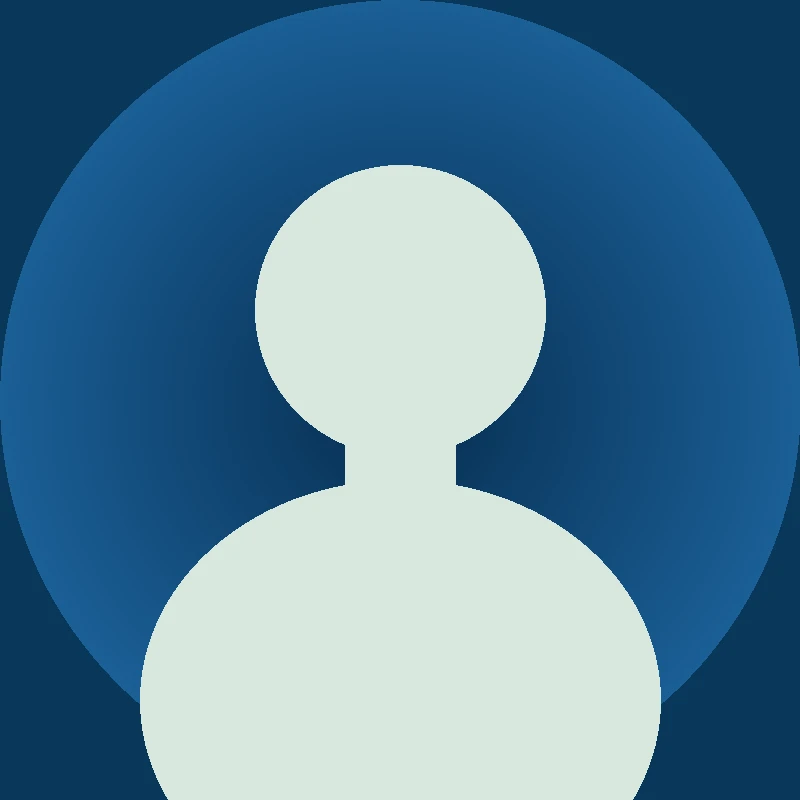
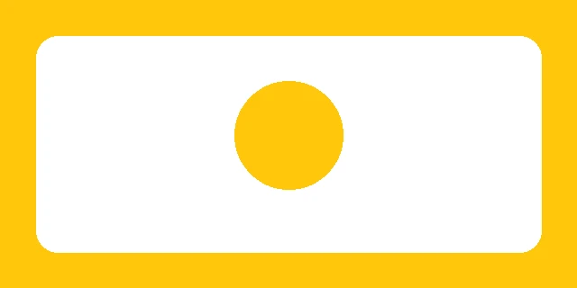
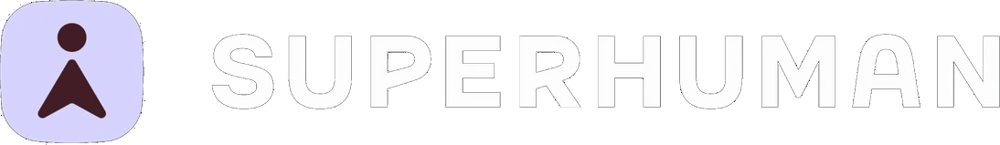
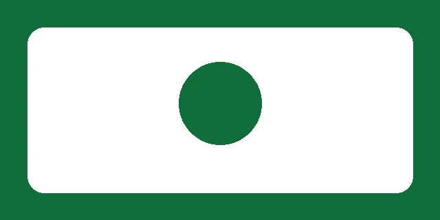
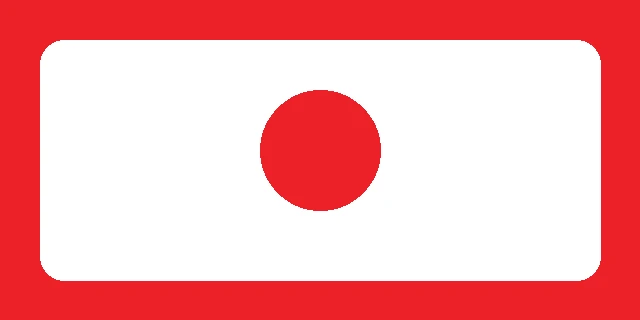
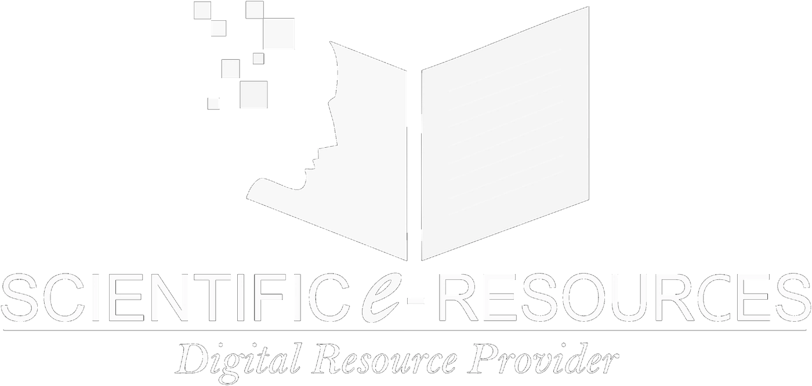

Keynote
Dr. Milabel E. Ho
Executive Director, AACCUP
About the CE-Logic National Conference
The CE-Logic National Conference convenes academic library leaders, solution partners, and higher education stakeholders for a program focused on strategic planning, digital services, and research performance. Sessions will be available via live stream on event days.

Program overview
The 18th CE-Logic National Conference program includes the following focus areas:
University librarians, LIS educators, and institutional decision-makers examine the strategic role of library and information services in higher education.
Multi-year planning, AI-enabled services, and the evolution of academic libraries into data-informed centers for teaching, learning, and research.
Discussions on research visibility, quality assurance, academic integrity, and tools that support globally competitive Philippine HEIs.
Featured presentations from technology and content partners, including AI productivity solutions, research databases, learning resources, and the CeiGo launch.
Conference theme
Higher education institutions continue to adapt to artificial intelligence, research performance benchmarks, and the demand for data-literate graduates. Academic libraries are central to this work.
The 2026 theme, Empowering Data Champions for Sustainable, Future-Ready, and Globally Competitive Education, frames higher education institutions as key drivers of sustainable development through professionals and graduates who use data for informed decision-making and institutional impact.
Aligned with the CHED ACHIEVE framework and the United Nations Sustainable Development Goals (SDGs), the conference program will be available via live stream for library leaders and stakeholders nationwide.
Event-day access
Keynotes, plenary sessions, partner presentations, the CeiGo launch, and the leadership panel will be available through the official conference live stream on event days.
Please return to this page on July 30-31, 2026. The stream link will be activated when the program begins.
Stream link activates on event daySpeakers
The program features quality assurance leaders, university librarians, LIS faculty, and industry partners addressing data strategy, artificial intelligence, academic integrity, and institutional competitiveness. Additional speakers may be announced.
Executive Director, AACCUP

University Librarian, UP Diliman

Dean, BulSU · President, PLAI
Associate Director, DLSU Libraries
Access & Resource Management, DLSU Libraries
UP School of Library and Information Studies
University Librarian, Ateneo de Manila University

Assistant Director, National Library of the Philippines
Business & Sales Enablement Manager, iGroup

Channel Partner Manager APAC, Grammarly by Superhuman
Senior Regional Account Manager, Gale / Cengage

Chief Executive Officer, CE-Logic, Inc.
Official photographs forthcoming. Temporary placeholders will be replaced with confirmed speaker images.
Conference program
A two-day program covering institutional strategy, artificial intelligence in library services, partner presentations, and the CeiGo launch, available via live stream.
Philippine libraries as strategic enablers of data-driven and globally competitive education.
Development planning, digital ecosystems, AI-enabled services, and library investments aligned with research performance.
Keynote on AI in libraries, logo unveiling, and formal product launch proceedings.
Library directors and partners discuss artificial intelligence, academic integrity, and sustainable growth.
Partners and sponsors
Technology, content, and research partners supporting the 18th CE-Logic National Conference program and live stream experience.
Presenting · Launch partners

AI keynote partner for “From Search to Synthesis” and CeiGo launch programming.

Partner spotlight on AI-assisted writing and productivity for academic communities.
Knowledge & learning partners

Digital archives and research resources for teaching, learning, and discovery.

Learning solutions partner spotlighting content for higher education excellence.

Partner presentation supporting research access and scholarly resource ecosystems.
Presented by
CE-Logic, Inc. provides library automation, interactive media systems, databases, e-books, and e-journals under C&E Adaptive Learning Solutions. The National Conference supports institutional capacity in digital library services, research access, and future-ready learning ecosystems for Philippine higher education institutions.
Information on live streaming, speakers, and conference partners.
Please return to this page on July 30-31, 2026. The official stream link will be activated when programming begins. Use the “Watch stream” control in the page navigation during event days.
Day 1 includes the opening keynote, strategy sessions, and the CeiGo launch. Day 2 includes the AI services session, leadership panel, and closing remarks. Partner presentations form part of the live program.
Official speaker photographs will replace temporary placeholders as they are confirmed. Names and institutional affiliations follow the indicative program.
Conference partners include iGroup (CeiGo launch), Grammarly by Superhuman, Gale, Part of Cengage Group, McGraw-Hill, and Scientific eResources. The conference is presented by CE-Logic, Inc., under C&E Adaptive Learning Solutions.
18th CE-Logic National Conference. Featured speakers, partners and sponsors, and event-day live streaming are available on this page. Registration is not required to view the stream.
CE-Logic National Conference · C&E Adaptive Learning Solutions